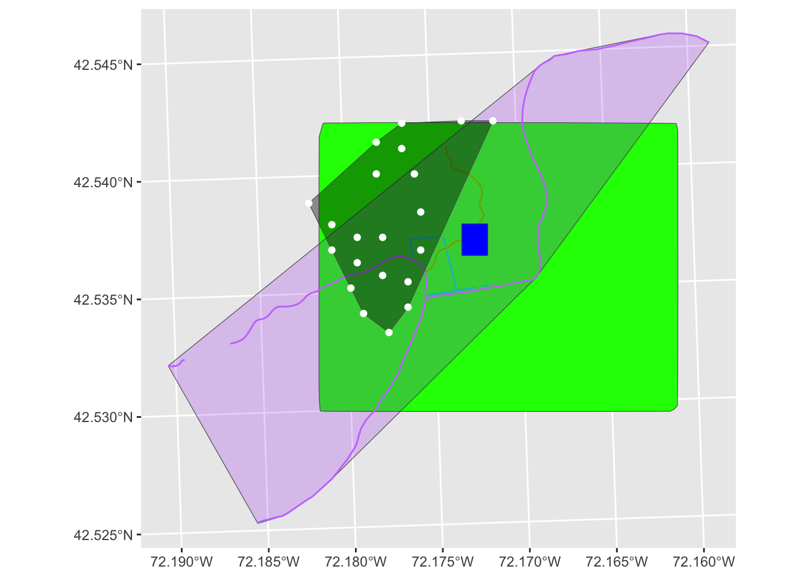
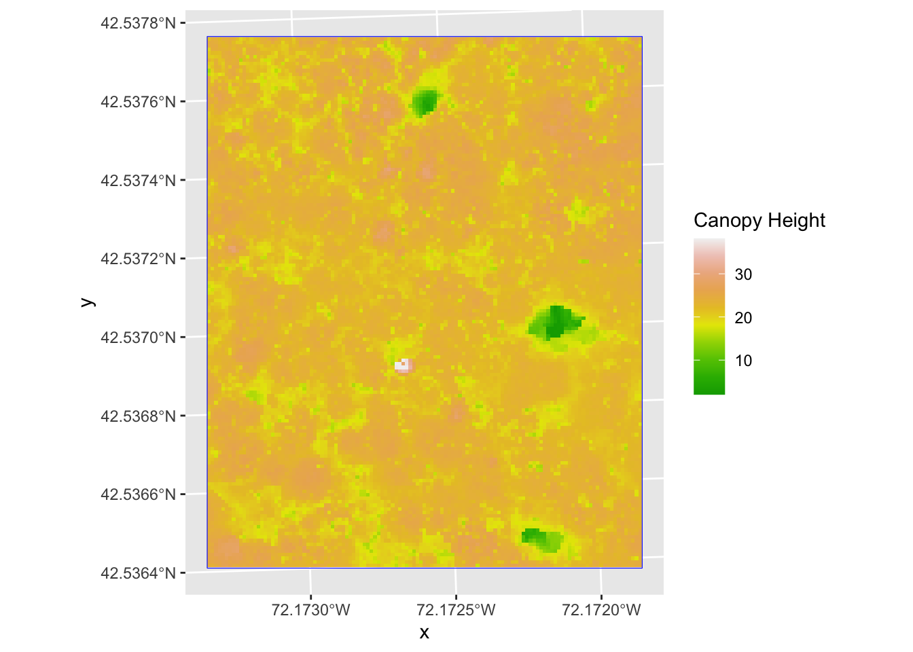
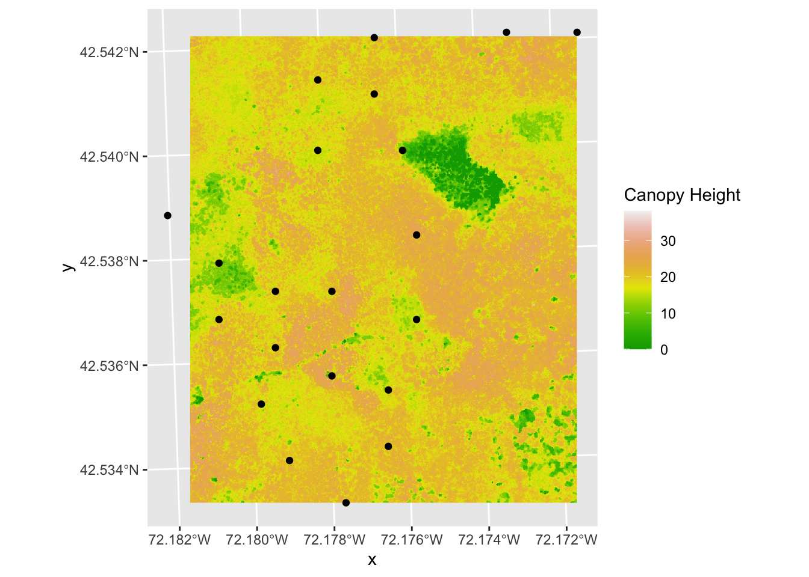
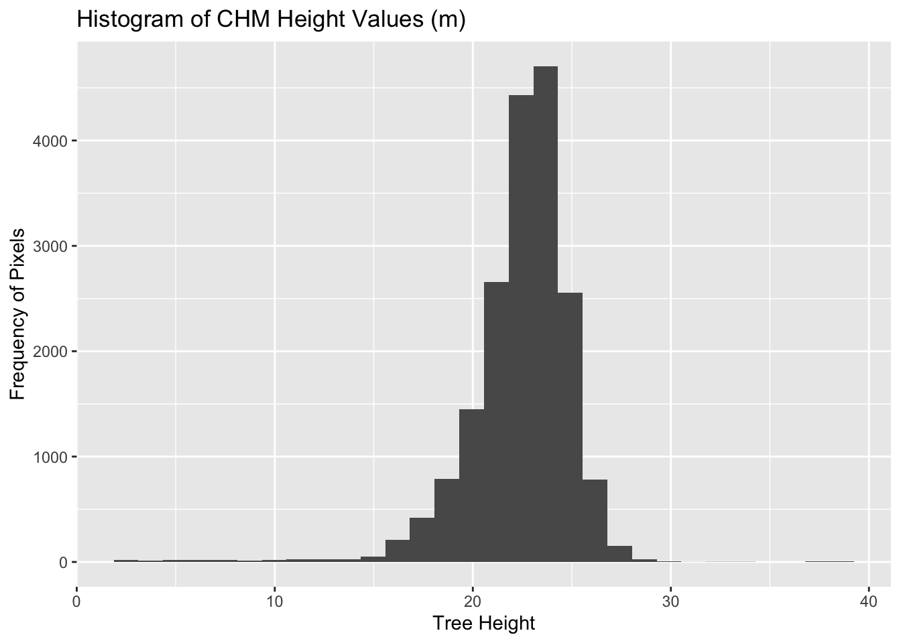
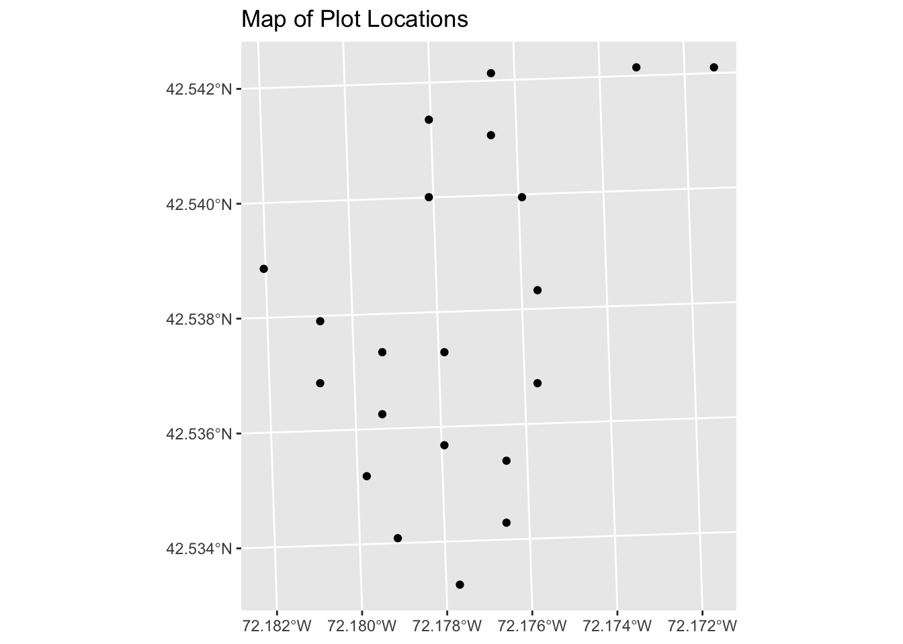

9 Geospatial data II: Vector-raster integration
9.1 Lecture summary
This week we will learn how to crop a raster using the extent of a vector layer. We will also cover how to extract values from a raster that occur within a set of polygons, or in a buffer (surrounding) region around a set of points. We will also import spatial points stored in .csv (Comma Separated Value) format into R as an sf spatial object. Lastly, we will reproject data imported from an ESRI shapefile format, export the reprojected data as an ESRI shapefile, and plot raster and vector data as layers in the same plot. The reading is about R’s debugging tools and in the lab we will create a spatial points layer for the bee occurences, and overlay bioregion vector data. These demos are based on Software Carpentery’s spatial data lessons.
9.1.1 Learning Objectives
For Monday, we will:
- Use the
crop()function to crop a raster object. - Use the
extract()function to extract pixels from a raster object that fall within a particular extent boundary. - Use the
ext()function to define an extent.
For Wednesday, we will;
- Import .csv files containing x,y coordinate locations into R as a data frame.
- Convert a data frame to a spatial object.
- Export a spatial object to a text file.
Here’s a visualization of the types of data we are using (same as last week).

First let’s load the data.
Part 1: Crop a Raster to Vector Extent
We often work with spatial layers that have different spatial extents (illustration of extents as a reminder below). The spatial extent of a vector layer or R spatial object represents the geographic “edge” or location that is the furthest north, south east and west. Thus it represents the overall geographic coverage of the spatial object.
 Image Source: National
Ecological Observatory Network (NEON)
Image Source: National
Ecological Observatory Network (NEON)
The graphic below illustrates the extent of several of the spatial layers that we have worked with last week + some new data:
- Area of interest (AOI) – blue
- Roads and trails – purple
- Vegetation plot locations (marked with white dots)– black
- A canopy height model (CHM) in GeoTIFF format – green
CHM is a raster, but we want it as a vector layer, so we can convert it using the function st_as_sf.
Now we can visualize all of our datasets.
 You can see the CHM raster is much larger than our areas of interest.
Frequent use cases of cropping a raster file include reducing file size and creating maps. Sometimes we have a raster file that is much larger than our study area or area of interest (as we have now). It is often more efficient to crop the raster to the extent of our study area to reduce file sizes as we process our data. Cropping a raster can also be useful when creating pretty maps so that the raster layer matches the extent of the desired vector layers.
Crop a Raster Using Vector Extent
We can use the crop() function to crop a raster to the extent of another
spatial object. To do this, we need to specify the raster to be cropped and the
spatial object that will be used to crop the raster. R will use the extent of
the spatial object as the cropping boundary.
To illustrate this, we will crop the Canopy Height Model (CHM) to only include
the area of interest (AOI). Let’s start by plotting the full extent of the CHM
data and overlay where the AOI falls within it. The boundaries of the AOI will
be colored blue, and we use fill = NA to make the area transparent.
ggplot() +
geom_raster(data = CHM_HARV_df, aes(x = x, y = y, fill = HARV_chmCrop)) +
scale_fill_gradientn(name = "Canopy Height", colors = terrain.colors(10)) +
geom_sf(data = aoi_boundary_HARV, color = "blue", fill = NA)
Now that we have visualized the area of the CHM we want to subset, we can
perform the cropping operation. We are going to crop() function from the
raster package to create a new object with only the portion of the CHM data
that falls within the boundaries of the AOI.
Now we can plot the cropped CHM data, along with a boundary box showing the
full CHM extent. However, remember, since this is raster data, we need to
convert to a data frame in order to plot using ggplot. To get the boundary
box from CHM, the st_bbox() will extract the 4 corners of the rectangle that
encompass all the features contained in this object. The st_as_sfc() converts
these 4 coordinates into a polygon that we can plot:
CHM_HARV_Cropped_df <- as.data.frame(CHM_HARV_Cropped, xy = TRUE)
ggplot() +
geom_sf(data = st_as_sfc(st_bbox(CHM_HARV)), fill = "green",
color = "green", alpha = .2) +
geom_raster(data = CHM_HARV_Cropped_df,
aes(x = x, y = y, fill = HARV_chmCrop)) +
scale_fill_gradientn(name = "Canopy Height", colors = terrain.colors(10)) 
The plot above shows that the full CHM extent (plotted in green) is much larger
than the resulting cropped raster. Our new cropped CHM now has the same extent
as the aoi_boundary_HARV object that was used as a crop extent (blue border
below).
ggplot() +
geom_raster(data = CHM_HARV_Cropped_df,
aes(x = x, y = y, fill = HARV_chmCrop)) +
geom_sf(data = aoi_boundary_HARV, color = "blue", fill = NA) +
scale_fill_gradientn(name = "Canopy Height", colors = terrain.colors(10)) +
coord_sf()
We can look at the extent of all of our other objects for this field site.
## SpatExtent : 731453, 733150, 4712471, 4713838 (xmin, xmax, ymin, ymax)## SpatExtent : 732128, 732251, 4713209, 4713359 (xmin, xmax, ymin, ymax)## SpatExtent : 732128.016925, 732251.102892, 4713208.71096, 4713359.17112 (xmin, xmax, ymin, ymax)## SpatExtent : 731405.307, 732275.307, 4712844.977, 4713846.299 (xmin, xmax, ymin, ymax)Our plot location extent is not the largest but is larger than the AOI Boundary. It would be nice to see our vegetation plot locations plotted on top of the Canopy Height Model information.
9.1.2 In-class challenge 1: Crop to Vector Points Extent
- Crop the Canopy Height Model to the extent of the study plot locations.
- Plot the vegetation plot location points on top of the Canopy Height Model.
Solution
CHM_plots_HARVcrop <- crop(x = CHM_HARV, y = plot_locations_sp_HARV)
CHM_plots_HARVcrop_df <- as.data.frame(CHM_plots_HARVcrop, xy = TRUE)
ggplot() +
geom_raster(data = CHM_plots_HARVcrop_df,
aes(x = x, y = y, fill = HARV_chmCrop)) +
scale_fill_gradientn(name = "Canopy Height", colors = terrain.colors(10)) +
geom_sf(data = plot_locations_sp_HARV) +
coord_sf()
In the plot above all the vegetation plot locations (black dots) appear on the Canopy Height Model raster layer except for one. One is situated on the blank space to the left of the map. Why?
A modification of the first figure in this demo is below, showing the
relative extents of all the spatial objects. Notice that the extent for our
vegetation plot layer (black) extends further west than the extent of our CHM
raster (bright green). The crop() function will make a raster extent smaller,
it will not expand the extent in areas where there are no data. Thus, the
extent of our vegetation plot layer will still extend further west than the
extent of our (cropped) raster data (dark green).
Define an Extent
So far, we have used a vector layer to crop the extent of a raster dataset.
Alternatively, we can also the ext() function to define an extent to be
used as a cropping boundary. This creates a new object of class extent. Here we
will provide the ext() function our xmin, xmax, ymin, and ymax (in that
order).
## [1] "SpatExtent"
## attr(,"package")
## [1] "terra"Function Tip
The extent can be created from a numeric vector (as shown above), a matrix, or
a list. For more details see the ext() function help file
(?terra::ext).
Once we have defined our new extent, we can use the crop() function to crop
our raster to this extent object.
To plot this data using ggplot() we need to convert it to a dataframe.
Now we can plot this cropped data. We will show the AOI boundary on the same plot for scale.
ggplot() +
geom_sf(data = aoi_boundary_HARV, color = "blue", fill = NA) +
geom_raster(data = CHM_HARV_manual_cropped_df,
aes(x = x, y = y, fill = HARV_chmCrop)) +
scale_fill_gradientn(name = "Canopy Height", colors = terrain.colors(10)) 
Part 2: Extract Raster Pixels Values Using Vector Polygons
Often we want to extract values from a raster layer for particular locations - for example, plot locations that we are sampling on the ground. For example, we can extract all pixel values within 20 m of our x,y point of interest. These can then be summarized into some value of interest (e.g. mean, maximum, total).
 Image Source: National Ecological Observatory Network (NEON)
Image Source: National Ecological Observatory Network (NEON)
To do this in R, we use the extract() function. The extract() function
requires:
- The raster that we wish to extract values from,
- The vector layer containing the polygons that we wish to use as a boundary or boundaries,
- we can tell it to store the output values in a data frame using
raw = FALSE(this is optional).
We will begin by extracting all canopy height pixel values located within our
aoi_boundary_HARV polygon which surrounds the tower located at the NEON
Harvard Forest field site.
## 'data.frame': 18450 obs. of 2 variables:
## $ ID : num 1 1 1 1 1 1 1 1 1 1 ...
## $ HARV_chmCrop: num 21.2 23.9 23.8 22.4 23.9 ...When we use the extract() function, R extracts the value for each pixel
located within the boundary of the polygon being used to perform the extraction
- in this case the aoi_boundary_HARV object (a single polygon). Here, the
function extracted values from 18,450 pixels.
We can create a histogram of tree height values within the boundary to better
understand the structure or height distribution of trees at our site. We will
use the column HARV_chmCrop from our data frame as our x values, as this
column represents the tree heights for each pixel.
ggplot() +
geom_histogram(data = tree_height, aes(x = HARV_chmCrop)) +
ggtitle("Histogram of CHM Height Values (m)") +
xlab("Tree Height") +
ylab("Frequency of Pixels")## `stat_bin()` using `bins = 30`. Pick better value with `binwidth`.
We can also use the summary() function to view descriptive statistics
including min, max, and mean height values. These values help us better
understand vegetation at our field site.
## Min. 1st Qu. Median Mean 3rd Qu. Max.
## 2.03 21.36 22.81 22.43 23.97 38.17Summarize Extracted Raster Values
We often want to extract summary values from a raster. We can tell R the type
of summary statistic we are interested in using the fun = argument. Let’s
extract a mean height value for our AOI.
mean_tree_height_AOI <- extract(x = CHM_HARV, y = aoi_boundary_HARV,
fun = mean)
mean_tree_height_AOI## ID HARV_chmCrop
## 1 1 22.43018It appears that the mean height value, extracted from our LiDAR data derived canopy height model is 22.43 meters.
Extract Data using x,y Locations
We can also extract pixel values from a raster by defining a buffer or area
surrounding individual point locations using the st_buffer() function. To do
this we define the summary argument (fun = mean) and the buffer distance
(dist = 20) which represents the radius of a circular region around each
point. By default, the units of the buffer are the same units as the data’s
CRS. All pixels that are touched by the buffer region are included in the
extract.
 Image Source: National Ecological Observatory Network (NEON)
Image Source: National Ecological Observatory Network (NEON)
Let’s put this into practice by figuring out the mean tree height in the 20m
around the tower location (point_HARV).
mean_tree_height_tower <- extract(x = CHM_HARV,
y = st_buffer(point_HARV, dist = 20),
fun = mean)
mean_tree_height_tower## ID HARV_chmCrop
## 1 1 22.388069.1.3 In class challenge 2: Extract Raster Height Values For Plot Locations
Use the plot locations object (
plot_locations_sp_HARV) to extract an average tree height for the area within 20 m of each vegetation plot location in the study area. Because there are multiple plot locations, there will be multiple averages returned.Create a plot showing the mean tree height of each area.
Solution
# extract data at each plot location
mean_tree_height_plots_HARV <- extract(x = CHM_HARV,
y = st_buffer(plot_locations_sp_HARV,
dist = 20),
fun = mean)
# view data
mean_tree_height_plots_HARV## ID HARV_chmCrop
## 1 1 NaN
## 2 2 23.96756
## 3 3 22.34937
## 4 4 16.49739
## 5 5 21.54419
## 6 6 19.16772
## 7 7 20.61651
## 8 8 21.61439
## 9 9 12.23006
## 10 10 19.13398
## 11 11 21.36966
## 12 12 19.32084
## 13 13 17.25975
## 14 14 20.47120
## 15 15 12.68301
## 16 16 15.51888
## 17 17 18.90894
## 18 18 18.19369
## 19 19 19.67441
## 20 20 20.23245
## 21 21 20.44984# plot data
ggplot(data = mean_tree_height_plots_HARV, aes(ID, HARV_chmCrop)) +
geom_col() +
ggtitle("Mean Tree Height at each Plot") +
xlab("Plot ID") +
ylab("Tree Height (m)")## Warning: Removed 1 row containing missing values or values outside the scale range
## (`geom_col()`). On Wednesday we will continue learning skills for vector-raster itegration.
On Wednesday we will continue learning skills for vector-raster itegration.
Spatial Data in Text Format
We would like to:
- Create a map of these plot locations, but we only have a .csv of their locations.
- Export the data in an ESRI
shapefileformat to share with our colleagues. Thisshapefilecan be imported into most GIS software. - Create a map showing vegetation height with plot locations layered on top.
Spatial data are sometimes stored in a text file format (.txt or .csv). If
the text file has an associated x and y location column, then we can
convert it into an sf spatial object. The sf object allows us to store both
the x,y values that represent the coordinate location of each point and the
associated attribute data - or columns describing each feature in the spatial
object.
Import .csv
The HARV_PlotLocations.csv file contains x, y (point) locations for study
plot where NEON collects data on
vegetation and other ecological metics.
To begin let’s import a .csv file that contains plot coordinate x, y
locations at the NEON Harvard Forest Field Site (HARV_PlotLocations.csv) and
look at the structure of that new object:
plot_locations_HARV <-
read.csv("data/NEON-DS-Site-Layout-Files/HARV/HARV_PlotLocations.csv")
str(plot_locations_HARV)## 'data.frame': 21 obs. of 16 variables:
## $ easting : num 731405 731934 731754 731724 732125 ...
## $ northing : num 4713456 4713415 4713115 4713595 4713846 ...
## $ geodeticDa: chr "WGS84" "WGS84" "WGS84" "WGS84" ...
## $ utmZone : chr "18N" "18N" "18N" "18N" ...
## $ plotID : chr "HARV_015" "HARV_033" "HARV_034" "HARV_035" ...
## $ stateProvi: chr "MA" "MA" "MA" "MA" ...
## $ county : chr "Worcester" "Worcester" "Worcester" "Worcester" ...
## $ domainName: chr "Northeast" "Northeast" "Northeast" "Northeast" ...
## $ domainID : chr "D01" "D01" "D01" "D01" ...
## $ siteID : chr "HARV" "HARV" "HARV" "HARV" ...
## $ plotType : chr "distributed" "tower" "tower" "tower" ...
## $ subtype : chr "basePlot" "basePlot" "basePlot" "basePlot" ...
## $ plotSize : int 1600 1600 1600 1600 1600 1600 1600 1600 1600 1600 ...
## $ elevation : num 332 342 348 334 353 ...
## $ soilTypeOr: chr "Inceptisols" "Inceptisols" "Inceptisols" "Histosols" ...
## $ plotdim_m : int 40 40 40 40 40 40 40 40 40 40 ...We now have a data frame that contains 21 locations (rows) and 16 variables
(attributes). Note that all of our character data was imported into R as
character (text) data. Next, let’s explore the dataframe to determine whether
it contains columns with coordinate values. If we are lucky, our .csv will
contain columns labeled:
- “X” and “Y” OR
- Latitude and Longitude OR
- easting and northing (UTM coordinates)
Let’s check out the column names of our dataframe.
## [1] "easting" "northing" "geodeticDa" "utmZone" "plotID"
## [6] "stateProvi" "county" "domainName" "domainID" "siteID"
## [11] "plotType" "subtype" "plotSize" "elevation" "soilTypeOr"
## [16] "plotdim_m"Identify X,Y Location Columns
Our column names include several fields that might contain spatial information.
The plot_locations_HARV$easting and plot_locations_HARV$northing columns
contain coordinate values. We can confirm this by looking at the first six rows
of our data.
## [1] 731405.3 731934.3 731754.3 731724.3 732125.3 731634.3## [1] 4713456 4713415 4713115 4713595 4713846 4713295We have coordinate values in our data frame. In order to convert our data frame
to an sf object, we also need to know the CRS associated with those
coordinate values.
There are several ways to figure out the CRS of spatial data in text format.
- We can check the file metadata in hopes that the CRS was recorded in the data.
- We can explore the file itself to see if CRS information is embedded in the file header or somewhere in the data columns.
Following the easting and northing columns, there is a geodeticDa and a
utmZone column. These appear to contain CRS information (datum and
projection). Let’s view those next.
## [1] "WGS84" "WGS84" "WGS84" "WGS84" "WGS84" "WGS84"## [1] "18N" "18N" "18N" "18N" "18N" "18N"It is not typical to store CRS information in a column. But this particular
file contains CRS information this way. The geodeticDa and utmZone columns
contain the information that helps us determine the CRS:
geodeticDa: WGS84 – this is geodetic datum WGS84utmZone: 18
To create the proj4 associated with UTM Zone 18 WGS84 we can look up the
projection on the
Spatial Reference website,
which contains a list of CRS formats for each projection. From here, we can
download the proj4 string for UTM Zone 18N WGS84 by clicking the proj link.
However, if we have other data in the UTM Zone 18N projection, it’s much easier
to use the st_crs() function to extract the CRS in proj4 format from that
object and assign it to our new spatial object. We’ve seen this CRS before with
our Harvard Forest study site (point_HARV).
## Coordinate Reference System:
## User input: WGS 84 / UTM zone 18N
## wkt:
## PROJCRS["WGS 84 / UTM zone 18N",
## BASEGEOGCRS["WGS 84",
## DATUM["World Geodetic System 1984",
## ELLIPSOID["WGS 84",6378137,298.257223563,
## LENGTHUNIT["metre",1]]],
## PRIMEM["Greenwich",0,
## ANGLEUNIT["degree",0.0174532925199433]],
## ID["EPSG",4326]],
## CONVERSION["UTM zone 18N",
## METHOD["Transverse Mercator",
## ID["EPSG",9807]],
## PARAMETER["Latitude of natural origin",0,
## ANGLEUNIT["Degree",0.0174532925199433],
## ID["EPSG",8801]],
## PARAMETER["Longitude of natural origin",-75,
## ANGLEUNIT["Degree",0.0174532925199433],
## ID["EPSG",8802]],
## PARAMETER["Scale factor at natural origin",0.9996,
## SCALEUNIT["unity",1],
## ID["EPSG",8805]],
## PARAMETER["False easting",500000,
## LENGTHUNIT["metre",1],
## ID["EPSG",8806]],
## PARAMETER["False northing",0,
## LENGTHUNIT["metre",1],
## ID["EPSG",8807]]],
## CS[Cartesian,2],
## AXIS["(E)",east,
## ORDER[1],
## LENGTHUNIT["metre",1]],
## AXIS["(N)",north,
## ORDER[2],
## LENGTHUNIT["metre",1]],
## ID["EPSG",32618]]The output above shows that the points vector layer is in UTM zone 18N. We can
thus use the CRS from that spatial object to convert our non-spatial dataframe
into an sf object.
Next, let’s create a crs object that we can use to define the CRS of our sf
object when we create it.
## Coordinate Reference System:
## User input: WGS 84 / UTM zone 18N
## wkt:
## PROJCRS["WGS 84 / UTM zone 18N",
## BASEGEOGCRS["WGS 84",
## DATUM["World Geodetic System 1984",
## ELLIPSOID["WGS 84",6378137,298.257223563,
## LENGTHUNIT["metre",1]]],
## PRIMEM["Greenwich",0,
## ANGLEUNIT["degree",0.0174532925199433]],
## ID["EPSG",4326]],
## CONVERSION["UTM zone 18N",
## METHOD["Transverse Mercator",
## ID["EPSG",9807]],
## PARAMETER["Latitude of natural origin",0,
## ANGLEUNIT["Degree",0.0174532925199433],
## ID["EPSG",8801]],
## PARAMETER["Longitude of natural origin",-75,
## ANGLEUNIT["Degree",0.0174532925199433],
## ID["EPSG",8802]],
## PARAMETER["Scale factor at natural origin",0.9996,
## SCALEUNIT["unity",1],
## ID["EPSG",8805]],
## PARAMETER["False easting",500000,
## LENGTHUNIT["metre",1],
## ID["EPSG",8806]],
## PARAMETER["False northing",0,
## LENGTHUNIT["metre",1],
## ID["EPSG",8807]]],
## CS[Cartesian,2],
## AXIS["(E)",east,
## ORDER[1],
## LENGTHUNIT["metre",1]],
## AXIS["(N)",north,
## ORDER[2],
## LENGTHUNIT["metre",1]],
## ID["EPSG",32618]]## [1] "crs"** .csv to sf object**
Next, let’s convert our dataframe into an sf object. To do this, we need to
specify:
- The columns containing X (
easting) and Y (northing) coordinate values - The CRS that the column coordinate represent (units are included in the CRS) - stored in our
utmCRSobject.
We will use the st_as_sf() function to perform the conversion.
plot_locations_sp_HARV <- st_as_sf(plot_locations_HARV,
coords = c("easting", "northing"),
crs = utm18nCRS)We should double check the CRS to make sure it is correct.
## Coordinate Reference System:
## User input: WGS 84 / UTM zone 18N
## wkt:
## PROJCRS["WGS 84 / UTM zone 18N",
## BASEGEOGCRS["WGS 84",
## DATUM["World Geodetic System 1984",
## ELLIPSOID["WGS 84",6378137,298.257223563,
## LENGTHUNIT["metre",1]]],
## PRIMEM["Greenwich",0,
## ANGLEUNIT["degree",0.0174532925199433]],
## ID["EPSG",4326]],
## CONVERSION["UTM zone 18N",
## METHOD["Transverse Mercator",
## ID["EPSG",9807]],
## PARAMETER["Latitude of natural origin",0,
## ANGLEUNIT["Degree",0.0174532925199433],
## ID["EPSG",8801]],
## PARAMETER["Longitude of natural origin",-75,
## ANGLEUNIT["Degree",0.0174532925199433],
## ID["EPSG",8802]],
## PARAMETER["Scale factor at natural origin",0.9996,
## SCALEUNIT["unity",1],
## ID["EPSG",8805]],
## PARAMETER["False easting",500000,
## LENGTHUNIT["metre",1],
## ID["EPSG",8806]],
## PARAMETER["False northing",0,
## LENGTHUNIT["metre",1],
## ID["EPSG",8807]]],
## CS[Cartesian,2],
## AXIS["(E)",east,
## ORDER[1],
## LENGTHUNIT["metre",1]],
## AXIS["(N)",north,
## ORDER[2],
## LENGTHUNIT["metre",1]],
## ID["EPSG",32618]]Plot Spatial Object
We now have a spatial R object, we can plot our newly created spatial object.

9.1.4 In class challenge 4: Import & Plot Additional Points
We want to add two phenology plots to our existing map of vegetation plot locations.
Import the .csv: HARV/HARV_2NewPhenPlots.csv into R and do the following:
- Find the X and Y coordinate locations. Which value is X and which value is Y?
- These data were collected in a geographic coordinate system (WGS84). Convert
the dataframe into an
sfobject. HINT: check the crs of our other spatial objects to see if you can extract that crs to use to assign to the new data. - Plot the new points with the plot location points from above. Be sure to add a legend. Use a different symbol for the 2 new points!
If you have extra time, feel free to add roads and other layers to your map!
Solution
- First we will read in the new csv file and look at the data structure.
newplot_locations_HARV <-
read.csv("data/NEON-DS-Site-Layout-Files/HARV/HARV_2NewPhenPlots.csv")
str(newplot_locations_HARV)## 'data.frame': 2 obs. of 13 variables:
## $ decimalLat: num 42.5 42.5
## $ decimalLon: num -72.2 -72.2
## $ country : chr "unitedStates" "unitedStates"
## $ stateProvi: chr "MA" "MA"
## $ county : chr "Worcester" "Worcester"
## $ domainName: chr "Northeast" "Northeast"
## $ domainID : chr "D01" "D01"
## $ siteID : chr "HARV" "HARV"
## $ plotType : chr "tower" "tower"
## $ subtype : chr "phenology" "phenology"
## $ plotSize : int 40000 40000
## $ plotDimens: chr "200m x 200m" "200m x 200m"
## $ elevation : num 358 346- The US boundary data we worked with previously is in a geographic WGS84 CRS. We
can use that data to establish a CRS for this data. First we will extract the
CRS from the
country_boundary_USobject and confirm that it is WGS84.
## Coordinate Reference System:
## User input: WGS 84
## wkt:
## GEOGCRS["WGS 84",
## DATUM["World Geodetic System 1984",
## ELLIPSOID["WGS 84",6378137,298.257223563,
## LENGTHUNIT["metre",1]]],
## PRIMEM["Greenwich",0,
## ANGLEUNIT["degree",0.0174532925199433]],
## CS[ellipsoidal,2],
## AXIS["latitude",north,
## ORDER[1],
## ANGLEUNIT["degree",0.0174532925199433]],
## AXIS["longitude",east,
## ORDER[2],
## ANGLEUNIT["degree",0.0174532925199433]],
## ID["EPSG",4326]]Then we will convert our new data to a spatial dataframe, using the geogCRS
object as our CRS.
newPlot.Sp.HARV <- st_as_sf(newplot_locations_HARV,
coords = c("decimalLon", "decimalLat"),
crs = geogCRS)Next we’ll confirm that the CRS for our new object is correct.
## Coordinate Reference System:
## User input: WGS 84
## wkt:
## GEOGCRS["WGS 84",
## DATUM["World Geodetic System 1984",
## ELLIPSOID["WGS 84",6378137,298.257223563,
## LENGTHUNIT["metre",1]]],
## PRIMEM["Greenwich",0,
## ANGLEUNIT["degree",0.0174532925199433]],
## CS[ellipsoidal,2],
## AXIS["latitude",north,
## ORDER[1],
## ANGLEUNIT["degree",0.0174532925199433]],
## AXIS["longitude",east,
## ORDER[2],
## ANGLEUNIT["degree",0.0174532925199433]],
## ID["EPSG",4326]]We will be adding these new data points to the plot we created before. The data
for the earlier plot was in UTM. Since we’re using ggplot, it will reproject
the data for us.
- Now we can create our plot.
ggplot() +
geom_sf(data = plot_locations_sp_HARV, color = "orange") +
geom_sf(data = newPlot.Sp.HARV, color = "lightblue") +
ggtitle("Map of All Plot Locations")
Export to an ESRI shapefile
We can write an R spatial object to an ESRI shapefile using the st_write function
in sf. To do this we need the following arguments:
- the name of the spatial object (
plot_locations_sp_HARV) - the directory where we want to save our ESRI
shapefile(to usecurrent = getwd()or you can specify a different path) - the name of the new ESRI
shapefile(PlotLocations_HARV) - the driver which specifies the file format (ESRI Shapefile)
We can now export the spatial object as an ESRI shapefile.
9.2 Dicussion & Reflection: Debugging in R
How to use R’s debugging tools, handle errors, and avoid bugs
9.2.1 1) Basic debugging strategies
Read and think about the error message. Sometimes it’s inscrutable, but often it just needs a bit of deciphering. Looking up a given error message on Stack Overflow or simply doing a web search with the exact message in double quotes can be a good strategy.
Fix errors from the top down - fix the first error that is reported, because later errors are often caused by the initial error. It’s common to have a string of many errors, which looks daunting, caused by a single initial error.
Is the bug reproducible - does it always happen in the same way at at the same point? It can help to restart R and see if the bug persists - this can sometimes help in figuring out if there is a scoping issue and we are using a global variable that we did not mean to.
Another basic strategy is to build up code in pieces (or tear it back in pieces to a simpler version). This allows you to isolate where the error is occurring.
If you’ve written your code modularly with lots of functions, you can test individual functions. Often the error will be in what gets passed into and out of each function.
You can have warnings printed as they occurred, rather than saved, using
options(warn = 1). This can help figure out where in a loop a warning is being generated. You can also have R convert warnings to error usingoptions(warn = 2).At the beginning of time (the 1970s?), the standard debugging strategy was to insert print statements in one’s code to see the value of a variable and thereby decipher what could be going wrong. We have better tools nowadays, but this approach is still useful, particularly when you are having an issue with control statements (for loops, if/else).
R is a scripting language, so you can usually run your code line by line to figure out what is happening. This can be a decent approach, particularly for simple code. However, when you are trying to find errors that occur within a series of many nested function calls or when the errors involve variable scoping (how R looks for variables that are not local to a function), or in other complicated situations, using formal debugging tools can be much more effective. Finally, if the error occurs inside of functions provided by R, rather than ones you write, it can be hard to run the code in those functions line by line.
9.2.2 R’s interactive debugging tools
This section gives an overview of the various debugging tools.
Note that RStudio wraps all of functionality of these tools in its graphical interface, so you can use all the tools there, but the tools will be provided with some additional graphical functionality from RStudio.
9.2.2.1 Interactive debugging via the browser
The core strategy for interactive debugging is to use the browser function, which pauses the current execution, and provides an interpreter, allowing you to view the current state of R. You can invoke browser in four ways
by inserting a call to
browser()in your code if you suspect where things are going wrongby invoking the browser after every step of a function using debug
by using
options(error = recover)to invoke the browser when an error occursby temporarily modifying a function to allow browsing using trace
Once in the browser, you can execute any R commands you want. In particular, using ls to look at the objects residing in the current function environment, looking at the values of objects, and examining the classes of objects is often helpful.
Type Q in the Console to exit browser.
9.2.2.2 Using debug to step through code
To step through a function, use debug(nameOfFunction). Then run your code. When the function is executed, R will pause execution just before the first line of the function. You are now using the browser and can examine the state of R and execute R statements.
Once in the browser context, you can use ‘n’ or
To unflag the function so that calling it doesn’t invoke debug, use undebug(nameOfFunction). In addition to working with functions you write you can use debug with standard R functions and functions from packages. For example you could do debug(glm).
If you know you only want to run the function once in debugging mode (to avoid having to use undebug), use debugonce(nameOfFunction).
9.2.2.3 Tracing errors in the call stack
traceback and recover allow you to see the call stack at the time of the error - i.e., they will show you all the functions that have been called, in the order called. This helps pinpoint where in a series of function calls the error may be occurring.
If you’ve run the code and gotten an error, you can invoke traceback after things have gone awry. R will show you the call stack, which can help pinpoint where an error is occurring.
More helpful is to be able to browse within the call stack. To do this invoke options(error = recover) (potentially in your .Rprofile if you do a lot of programming). Then when an error occurs, recover gets called, usually from the function in which the error occurred. The call to recover allows you to navigate the stack of active function calls at the time of the error and browse within the desired call. You just enter the number of the call you’d like to enter (or 0 to exit). You can then look around in the frame of a given function, entering
You can also combine this with options(warn = 2), which turns warnings into errors to get to the point where a warning was issued.
9.2.2.4 Using trace to temporarily insert code
trace lets you temporarily insert code into a function (including standard R functions and functions in packages!) that can then be easily removed. You can use trace in a variety of ways.
The most flexible way to use trace is to use the argument edit = TRUE and then insert whatever code you want wherever you want in the function given as the first argument to trace. If I want to ensure I use a particular editor, such as emacs, I can use the argument edit = “emacs”. A standard approach would be to add a line with browser() at some point in the function to be able to step through the code from that point.
You can also use trace without directly editing the function. Here are a couple examples:
trace(lm, recover)# invoke recover when the function (lm in this case) startstrace(lm, exit = browser)# invoke browser when the function ends
You call untrace, e.g., untrace(lm), to remove the temporarily inserted code; otherwise it’s removed when the session ends.
To figure out why warnings are being issued, you can do trace(warning, recover) which will insert a call to recover whenever warning is called.
Of course you can manually change the code in a function without using trace, but it’s very easy to forget to change things back (and a pain to remember exactly what you changed) and hard to do this with functions in packages, so trace is a nice way to do things.
9.2.3 Some common causes of bugs
Some of these are R-specific, while others are common to a variety of languages.
Parenthesis mis-matches
[[...]]vs.[...]==vs.=Comparing real numbers exactly using
==is dangerous because numbers on a computer are only represented to limited numerical precision. For example,You expect a single value but execution of the code gives a vector
You want to compare an entire vector but your code just compares the first value (e.g., in an if statement) – consider using identical or all.equal
Silent type conversion when you don’t want it, or lack of coercion where you’re expecting it
Using the wrong function or variable name
Giving unnamed arguments to a function in the wrong order
In an if-else statement, the
elsecannot be on its own line (unless all the code is enclosed in{}) because R will see theifpart of the statement, which is a valid R statement, will execute that, and then will encounter theelseand return an error.Forgetting to define a variable in the environment of a function and having R, via lexical scoping, get that variable as a global variable from one of the enclosing environments. At best the types are not compatible and you get an error; at worst, you use a garbage value and the bug is hard to trace. In some cases your code may work fine when you develop the code (if the variable exists in the enclosing environment), but then may not work when you restart R if the variable no longer exists or is different.
R (usually helpfully) drops matrix and array dimensions that are extraneous. This can sometimes confuse later code that expects an object of a certain dimension.
9.2.4 Tips for avoiding bugs and catching errors
9.2.4.1 Practice defensive programming
When writing functions, and software more generally, you’ll want to warn the user or stop execution when there is an error and exit gracefully, giving the user some idea of what happened. Here are some things to consider:
- check function inputs and warn users if the code will do something they might not expect or makes particular choices;
- check inputs to
ifand the ranges inforloops; - provide reasonable default arguments;
- document the range of valid inputs;
- check that the output produced is valid; and
- stop execution based on checks and give an informative error message.
The warning and stop functions allow you to do stop execution and issue warnings or errors in the same way that base R code does; in general they would be called based on an if statement. More succinctly, to stop code if a condition is not satisfied, you can use stopifnot. This allow you to catch errors that can be anticipated. I also recommend using some of R’s packages for doing such checks, such as assertthat, assertr, and checkmate.
Here’s an example of building a robust square root function using stop and warning. Note you could use stopifnot(is.numeric(x)) or assert_that(is.numeric(x)) in place of one of the checks here.
9.2.4.2 Catch run-time errors with try statements
Also, sometimes a function you call will fail, but you want to continue execution. For example, suppose you are doing a stratified analysis in which you take subsets of your data based on some categorical variable and fit a statistical model for each value of the categorical variable. If some of the subsets have no or very few observations, the statistical model fitting might fail. To do this, you might be using a for loop or lapply. You want your code to continue and fit the model for the rest of the cases even if one (or more) of the cases cannot be fit. You can wrap the function call that may fail within the try function (or tryCatch) and then your code won’t stop, even when an error occurs. Here’s a toy example.
## Error in lm.fit(x, y, offset = offset, singular.ok = singular.ok, ...) :
## 0 (non-NA) casesThe seventh stratum had no observations, so that call to lm failed, but the loop continued because we ‘caught’ the error with try. In this example, we could have checked the sample size for the subset before doing the regression, but in other contexts, we may not have an easy way to check in advance whether the function call will fail.
You can also use browser with try to inspect what is breaking your code.
9.2.4.3 Find and avoid global variables
In general, using global variables (variables that are not created or passed into a function) results in code that is not robust. Results will change if you or a user modifies that global variable, usually without realizing/remembering that a function depends on it.
Start every script by removing any lingering objects.
This can also be accomplished with the “bloom” in the environment panel in R studio.
To be systematic, the codetools library has some useful tools for checking code, including a function, findGlobals, that let’s you look for the use of global variables
9.2.4.4 Miscellaneous tips
- Use core R functionality and algorithms already coded. Figure out if a functionality already exists in (or can be adapted from) an R package (or potentially in a C/Fortran library/package): code that is part of standard mathematical/numerical packages will probably be more efficient and bug-free than anything you would write.
- Code in a modular fashion, making good use of functions, so that you don’t need to debug the same code multiple times. Smaller functions are easier to debug, easier to understand, and can be combined in a modular fashion (like the UNIX utilities).
- Write code for clarity and accuracy first; then worry about efficiency. Write an initial version of the code in the simplest way, without trying to be efficient (e.g., you might use for loops even if you’re coding in R); then make a second version that employs efficiency tricks and check that both produce the same output.
- Plan out your code in advance, including all special cases/possibilities.
- Write tests for your code early in the process.
- Build up code in pieces, testing along the way. Make big changes in small steps, sequentially checking to see if the code has broken on test case(s).
- Be careful that the conditions of
ifstatements and the sequences offorloops are robust when they involve evaluating R code. - Don’t hard code numbers - use variables (e.g., number of iterations, parameter values in simulations), even if you don’t expect to change the value, as this makes the code more readable and reduces bugs when you use the same number multiple times; e.g.
speedOfLight <- 3e8ornIts <- 1000.
9.2.5 How to get help online
9.2.5.1 Mailing lists and online forums
There are several mailing lists that have lots of useful postings. In general if you have an error, others have already posted about it.
- Stack overflow: R stuff will be tagged with ‘R’: http://stackoverflow.com/questions/tagged/r
- R help special interest groups (SIG) such as r-sig-hpc (high performance computing), r-sig-mac (R on Macs), etc. Unfortunately these are not easily searchable, but can often be found by simple web searchs, potentially including the name of the SIG in the search.
- Simple web searches: You may want to include “in R”, with the quotes in the search. To search a SIG you might include the name of the SIG in the search string
9.2.5.2 Asking questions online
If you’ve searched the archive and haven’t found an answer to your problem, you can often get help by posting to the R-help mailing list or one of the other lists mentioned above. A few guidelines (generally relevant when posting to mailing lists beyond just the R lists):
Search the archives and look through relevant R books or manuals first.
Boil your problem down to the essence of the problem, giving an example, including the output and error message
Say what version of R, what operating system and what operating system version you’re using. Both sessionInfo and Sys.info can be helpful for getting this information.
Read the R mailing list posting guide.
The R mailing lists are a way to get free advice from the experts, who include some of the world’s most knowledgeable R experts - seriously - members of the R core development team contribute frequently. The cost is that you should do your homework and that sometimes the responses you get may be blunt, along the lines of “read the manual”. I think it’s a pretty good tradeoff - where else do you get the foremost experts in a domain actually helping you?
9.2.5.2.1 Pre‑class reflection (please submit short answers via canvas)
- Your debugging workflow. Describe the steps you currently take when code fails. Which step from the reading would most improve your process, and why?
9.2.5.2.2 In‑class small‑group prompts
- Step through with browser() (10–12 min)
Goal: Practice pausing and inspecting local state.
Add a breakpoint and re-run:
good <- function(x) {
browser() # step in: n (next), c (continue)
y <- x + 1
mean(y, na.rm = TRUE)
}
debugonce(good)
good(c(1, 2, NA, 4))While paused:
- Inspect objects (ls(), str(x), class(x)), then step and re-inspect.
- Change x in place and continue — what happens?
- Remove the breakpoint and create a quick unit-style check that would have caught the bug earlier.
9.3 Lab: Spatial data 2: Working with OBA data (Student Version)
Conservation/ecology Topics
- Species distributions
Computational Topics - Convert a data frame to a spatial object. - Plot multiple spatial layers.
Lab part 1: Oregon bee atlas data exploration
1a. Import the OBA data. (remember it’s in the main data folder of the book and not in the labs folder, so you have to move back a folder)
1b. Find the columns related to genus and species and paste them together (with a space between) using the function paste(). Name the new column GenusSpecies.
1c. Use
sort()andunique()to print the unique values of GenusSpecies in alphabetical order. How many species are there?
Some specimens are not identified to species, only genus. How is this reflected in the data?
1d. So many bees, so little time. Count up the occurrences of each bee species, and subset the data to bees that have been seen at least two times. You can use the tidyverse or any other functions in R that you like. How many “species” are there?
1e. Google a few bee names (that have been seen > 2 times) and find one with an a look that resonates with you.
What is the name of your bee?
Import the photos into Rmarkdown below (hint: googling bee name “discover life” or “inat” can often get you a photo. Many bees will no have any photos :( use the format 
Lab part 2: Plotting the distribution of your spirit bee.
How that have chosen your spirit bee, we would like to plot it’s distribution. What is the crs of the data? Annoyingly it is not described anywhere in the spreadsheet (always list your crs in your data) but it is the same as what inat uses because all bees have a georeferenced plant host. If the data is in lat long, it is “unprojected” so only a datum will be listed. DATUM: WGS84, unprojected lat long. EPSG code: 4326.
## [1] "GEOGCRS[\"WGS 84\",\n DATUM[\"World Geodetic System 1984\",\n ELLIPSOID[\"WGS 84\",6378137,298.257223563,\n LENGTHUNIT[\"metre\",1]]],\n PRIMEM[\"Greenwich\",0,\n ANGLEUNIT[\"degree\",0.0174532925199433]],\n CS[ellipsoidal,2],\n AXIS[\"geodetic latitude (Lat)\",north,\n ORDER[1],\n ANGLEUNIT[\"degree\",0.0174532925199433]],\n AXIS[\"geodetic longitude (Lon)\",east,\n ORDER[2],\n ANGLEUNIT[\"degree\",0.0174532925199433]],\n USAGE[\n SCOPE[\"Horizontal component of 3D system.\"],\n AREA[\"World.\"],\n BBOX[-90,-180,90,180]],\n ID[\"EPSG\",4326]]"2a. Extract the X and Y locations for your species only from the data and create a spatial object. Don’t forget to set the CRS! Hint 1: consider what other data you would like to keep as attributes, for example what flower they were foraging on. Hint 2: Remember the lat is y and long is x. Hint 3: You may want to rename the column names you can use,
colnames()orrename()from dplyr and reassign the names. This is only if you don’t love the names they already have.2b. Plot your exciting bee data!
Not so exciting without some kind of background…
Luckily we can download basemaps into R using the map_data function in ggplot (among many others). There is an example for retrieving the Oregon county polygons.
- 2c. Add your species’s points to your choice or an Oregon basemap.
Lab part 3: Cartography
- 3a. Here is your moment to explore your cartographic skills.
- Add the a spatial layer relevant to your final project (ex. fire perimeters) or one from the Oregon Geohub and tweek the Oregon map in anyway that is useful/visually appealing. You may need to crop that layer to the extent of your species’s distribution.
- Color your points according to some data attribute and add a legend (month collected, county, collector, associated plant, whatever you think is interesting). You may need to circle back to 2.1 to save additional attributes when you converted the dataframe to a spatial object.
- Fine-tune your map: add a title, make sure the legend label makes sense, add a scale bar (google “add scale bar map ggplot” and choose your favorite package). All maps must always have a scale bar. You can add a N arrow as well, though some cartographers argue that is only necessary if N isn’t at the top of the map.
- Write a figure caption for your map explaining any interesting trends you see.
- Export your cropped layer to a .shp so you can use it again for your final project.
We are looking forward to seeing the maps you create!
Lab part 4: Spatial summary statistics For your final projects, you will likely need to come up with summary statistics that describes the areas around where bees are captured.
4a. Using the distribution of your chosen bee and the a raster spatial layer from Oregon Geohub, extract a meaningful summary statistics from your spatial layer within a buffer of 500, 750 1000 m.
4b. Create a plot that illustrates this summary data (box plot, barplot, scatter plot, historgram).
4c. Create a map of your cropped spatial data.